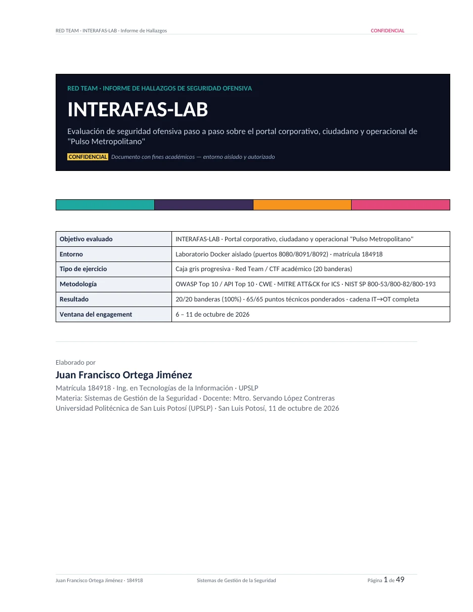
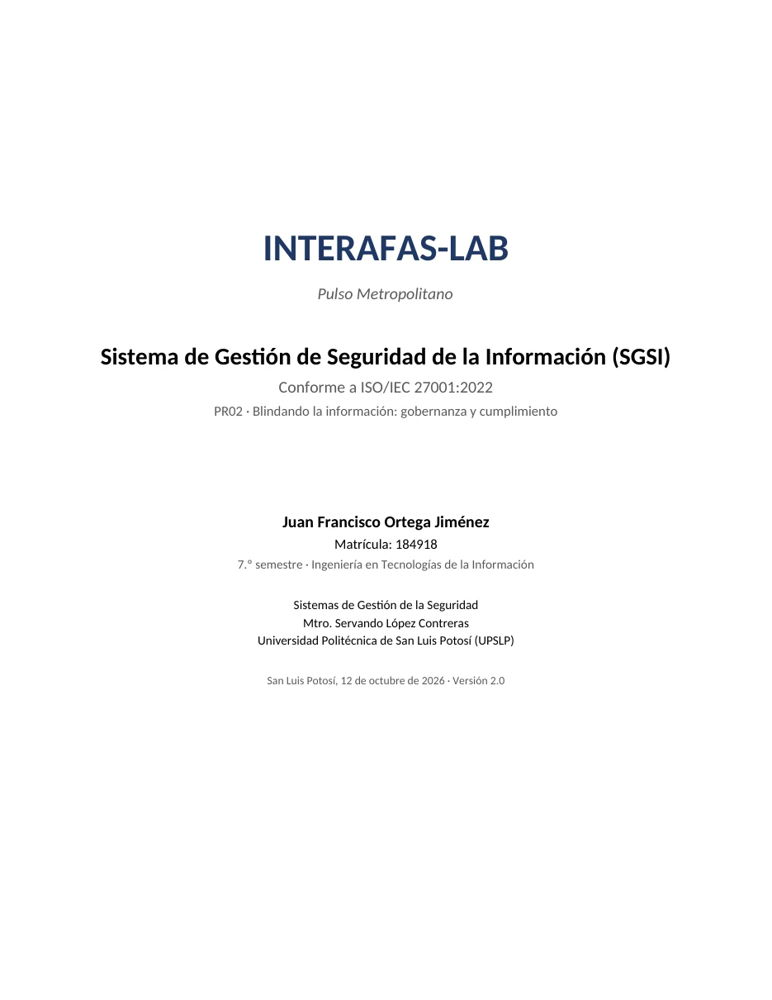
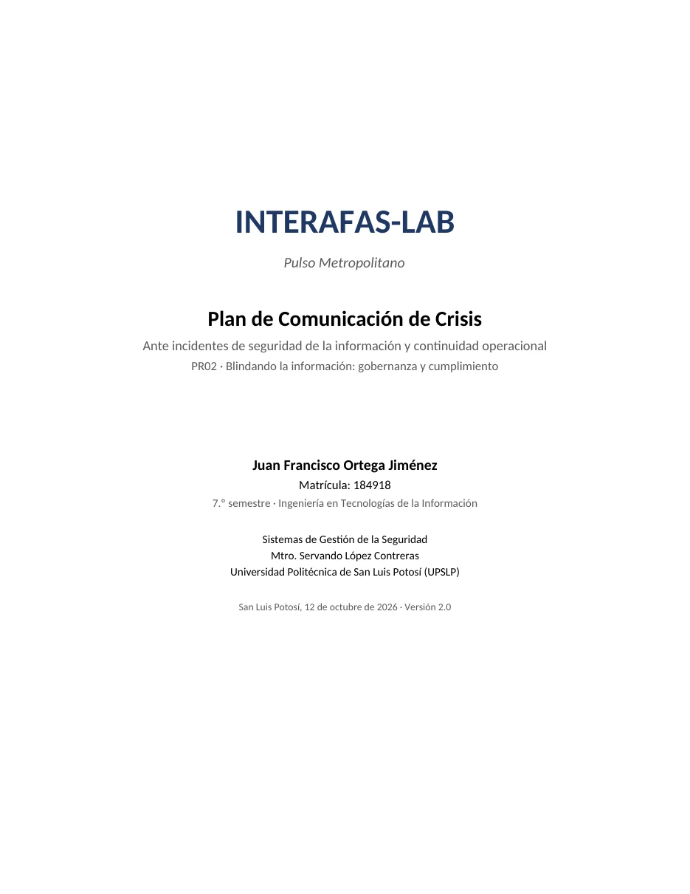
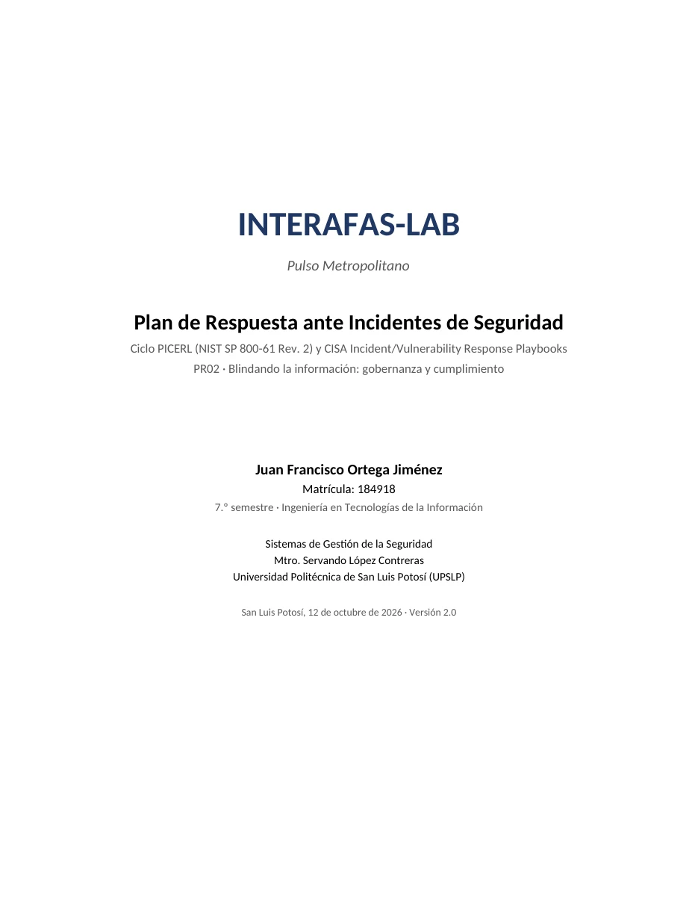
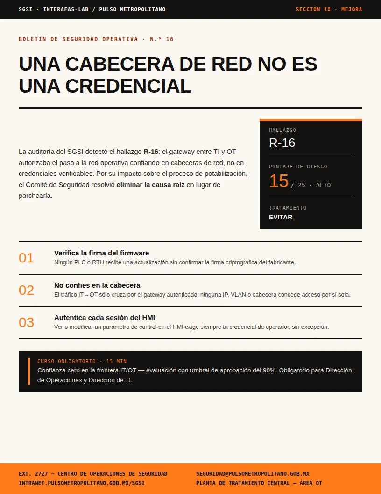

Escenario simulado
Pulso Metropolitano / INTERAFAS, un operador ficticio de agua potable que presta un servicio de infraestructura crítica a una zona metropolitana.
Segundo parcial · Proyecto PR02
Auditoría de seguridad y gobernanza aplicadas sobre INTERAFAS-LAB, un laboratorio académico basado en contenedores que simula a Pulso Metropolitano (INTERAFAS), un operador ficticio de infraestructura crítica de agua potable con componentes de TI y de tecnología operativa (OT).
01 / RESUMEN EJECUTIVO
El proyecto integra dos frentes complementarios de la seguridad de la información: la identificación controlada de vulnerabilidades dentro de un entorno de laboratorio autorizado, y la construcción de la documentación de gobernanza que una organización real necesitaría para gestionar, comunicar y responder ante ese tipo de hallazgos.
Por tratarse de material académico derivado de un ejercicio de auditoría ofensiva, esta página describe el contexto, el alcance y el marco metodológico del proyecto, pero no reproduce el recorrido de explotación paso a paso ni el contenido de los manuales del laboratorio. El detalle técnico completo, con evidencia y metodología íntegra, se entrega únicamente al docente dentro del paquete comprimido.
02 / OBJETIVO
03 / CONTEXTO DEL LABORATORIO
Pulso Metropolitano / INTERAFAS, un operador ficticio de agua potable que presta un servicio de infraestructura crítica a una zona metropolitana.
Portal institucional de cara al público, paneles internos de gestión administrativa y procesos de la capa de tecnología operativa (OT) que supervisan el proceso industrial.
Laboratorio desplegado mediante contenedores Docker, provisto y administrado por la institución, con acceso restringido a los equipos matriculados.
Las pruebas se limitan estrictamente al entorno del laboratorio provisto para la práctica; no se evaluó ningún sistema externo ni productivo.
04 / MARCO METODOLÓGICO
Clasificación y descripción técnica de las debilidades identificadas en los componentes web del laboratorio.
Correlación de las técnicas observadas con tácticas adversariales reconocidas.
Estructura del Sistema de Gestión de Seguridad de la Información: activos, políticas, riesgos y controles del Anexo A.
Ciclo de respuesta a incidentes: preparación, identificación, contención, erradicación, recuperación y lecciones aprendidas.
Federal Government Cybersecurity Incident and Vulnerability Response Playbooks, como referencia complementaria para los playbooks de respuesta.
05 / ENTREGABLES
Hallazgos clasificados con severidad, evidencia y recomendaciones de remediación.
Alcance, activos de información, políticas funcionales, matriz de riesgo y plan de mejora continua.
Mensajes por etapa del incidente, vocería autorizada y monitoreo de medios y desinformación.
Playbooks por escenario con disparador, responsables, contención, recuperación y cierre.
Registro oficial generado por INTERAFAS-LAB como evidencia de la secuencia temporal del ejercicio.




06 / MATERIAL DE PREVENCIÓN
A partir de la matriz de riesgo del SGSI (sección de Planificación) se diseñó un boletín de seguridad operativa dirigido al personal de Operaciones y de TI. Traduce en hábitos concretos la decisión de evitar el riesgo del hallazgo R-16 (bypass de autenticación en la frontera IT/OT por cabeceras de red confiadas, riesgo Alto 15/25, impacto catastrófico).

07 / CONCLUSIÓN
El ejercicio deja como aprendizaje principal que un hallazgo técnico aislado tiene poco valor organizacional si no se traduce en una política, un responsable y un procedimiento de respuesta. Documentar INTERAFAS-LAB bajo marcos reconocidos obliga a pensar cada bandera no solo como un punto ganado, sino como un riesgo real que una infraestructura crítica tendría que gobernar, comunicar y remediar.